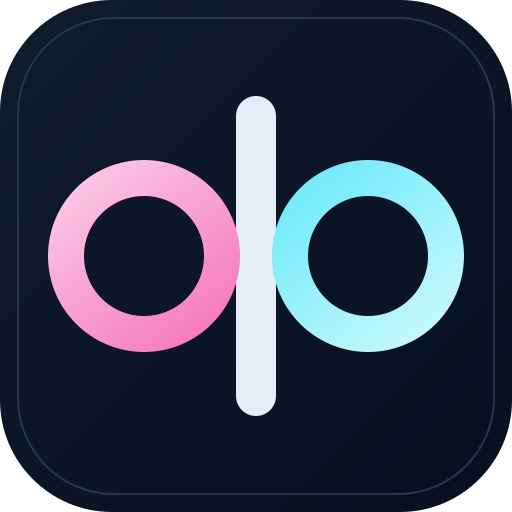

Four directions built from the terminal UI palette. The small-size row under each card shows how the mark holds up at 96, 48, 32, and 24 pixels.

Back-to-back lowercase q and b sharing one stem. Two bowls read as a task board turned sideways.
qb-ligature.svg
The q and b bowls become two task cards on a shared spine. More literal about kanban, still a monogram.
qb-cards.svg
A Q whose counter holds three kanban columns. Reads as task board first, initial second.
q-columns.svg
The app's ◈ header glyph as a gem-cut badge with the qb mark knocked out in white.
qb-diamond.svg
Open this file in a browser: assets/icons/preview.html. SVGs scale cleanly to any size; use the 512 px PNGs for GitHub or store listing avatars.
assets/icons/preview.html